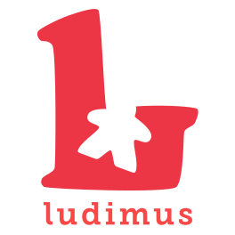

📅 Domenica 25 Ottobre 2026
🕰 dalle 10:00 alle 17:00
📍 Piazza
Stracòt è un gioco di cooperazione ispirato a Overcooked e ambientato nella cucina trentina: collaborate per preparare ricette, gestire gli ordini e ottenere il punteggio più alto prima che scada il tempo. Scopri Stracòt.
Vi aspettiamo a "Maroni in Festa" a Drena per provare Stracòt, un gioco di cooperazione ispirato a Overcooked e ambientato nella cucina trentina: collaborate per preparare ricette, gestire gli ordini e ottenere il punteggio più alto prima che scada il tempo. Scopri Stracòt.
Come partecipare: Accesso libero, non serve prenotare
Costo: Gratuito
A chi è rivolto: Tutti